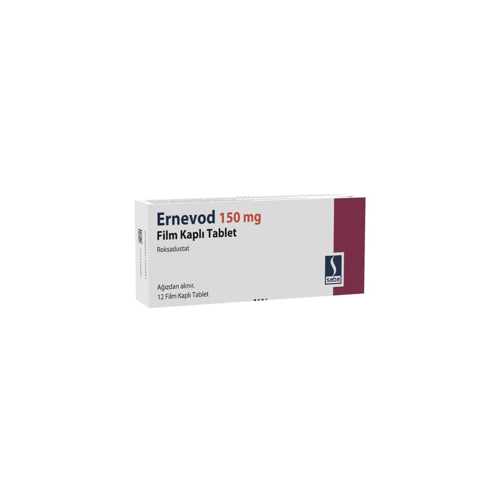

Ernevod 150 mg Film Kaplı Tablet (12 adet)

Ne için kullanılır
KT · Bölüm 1ERNEVOD 150 mg film kaplı tablet, tabletin bir tarafında ‘150’ baskısı olan kırmızı, badem şeklinde tabletlerdir. Tabletler blisterlerde sunulmakta ve 12 film kaplı tablet içeren ambalajlarda bulunur.
ERNEVOD, kanınızdaki kırmızı kan hücrelerinin sayısını ve hemoglobin seviyesini artıran bir ilaçtır. Etkin madde olarak roksadustat içerir.
ERNEVOD, kronik böbrek hastalığı olan hastalarda meydana gelen semptomatik anemisi (kansızlık) olan yetişkinlerin tedavisinde kullanılır. Anemi, çok az sayıda kırmızı kan hücreniz olduğunda ve hemoglobin seviyeniz çok düşük olduğunda ortaya çıkar. Sonuç olarak, vücudunuz yeterli oksijen alamayabilir. Anemi, yorgunluk, halsizlik veya nefes darlığı gibi belirtilere neden olabilir.
ERNEVOD’un etkin maddesi olan roksadustat vücutta oksijen seviyeleri düşük olduğunda kırmızı kan hücrelerinin üretimini artıran bir madde olan HIF seviyesini artırarak çalışır. İlaç HIF seviyelerini artırarak, kırmızı kan hücrelerinin üretimini arttırır ve hemoglobin (kırmızı kan hücrelerinde oksijen taşıyan protein) seviyesini yükseltir. Bu, vücudunuzun oksijen teminini artırır ve anemi belirtilerinizi azaltabilir.